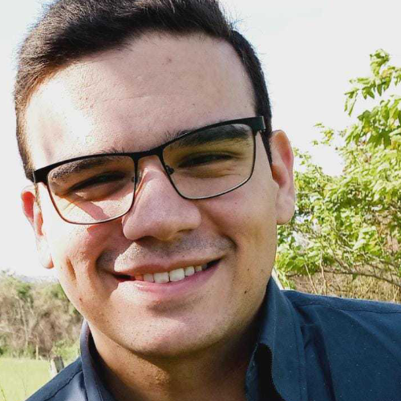
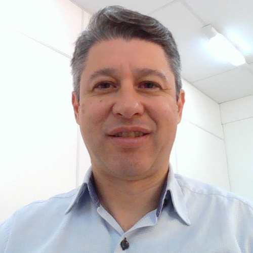
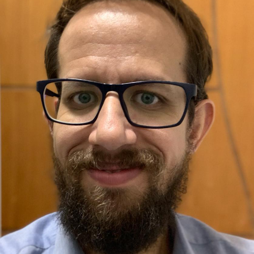
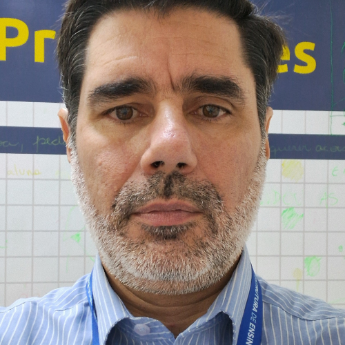

1° dia (06/05)
Estrutura Organizacional do Ambiente de Desenvolvimento
com Rafael Menegon
450 vagas
Cursos
Convidados
19h00 às 20h20
Auditório Jamil Salomão
Nascido em Americana Aos 18 anos ingressou no
curso de Análise e Desenvolvimento de Sistemas.
No 3º semestre do curso, iniciou sua carreira na
IBM como estagiário e posteriormente, foi
efetivado para atuar no projeto do ITAU no qual
adquiriu experiências como programador e após 2
anos foi em busca de novos desafios e encontrou
uma oportunidade no BTG Pactual uns dos maiores
bancos da América Latinano qual exerce o cargo de
líder técnico hoje em dia.
Roupas Inteligentes com Dispositivos IoT
(Internet das Coisas)
com Daives Arakem Bergamasco
95 vagas
Cursos
Convidados
19h00 às 20h20
Sala VIP I
Daives é graduado em Processamento de Dados. Também
possui graduação em Têxtil e Engenharia Agrimensura.
Possui mestrado e doutorado em Engenharia Química
pela Unicamp. Trabalha a 13 anos como Professor da
Fatec Americana na área de Química Têxtil nos cursos de
Tecnologia em Produção Têxtil e Têxtil e Moda.
Desenvolve projetos de Iniciação Científica envolvendo a
área têxtil e de informática. Na Faculdade de Americana –
FAM - trabalha a sete anos na área de Tecnologia da
Informação, ministrando aulas no curso de Ciência da
Computação.
Arduino: Explorando Leds e Sensores para Projetos
Inteligentes na Prática
com Lucas Serafim Parizotto
40 vagas
Cursos
Convidados
20h20
Laboratório 7
Possui graduação em Tecnologia Análise e
Desenvolvimento de Sistemas, Pós Graduação em
Gestão Estratégica da Tecnologia da Informação, Pós
Graduação em Educação a Distância, Pós Graduação
em Gestão de Pessoas e Licenciatura em Formação
de Pedagógica pelo Centro Paula Souza. Atualmente
é Professor na Faculdade de Americana FAM e
Professor de Ensino Técnico da Etec Prof. Dr. José
Dagnoni e Etec Ferrúcio Humberto Gazetta.

Python para Machine Learning
com Daniel Freire Zampelin
80 vagas
Cursos
Convidados
20h20
Laboratório 6
Daniel é graduado em Analise e Desenvolvimento de
Sistemas. Possui Pós Graduação em Análise de Dados
pela Faculdade Descomplica e Pós Graduando em
Especialização em Data Science no Centro
Universitário Uniamerica Descomplica. Membro da
equipe vencedora do IBM BlueHack 2018. Possui 5
anos de experiência na área de TI. Atualmente
professor dos cursos de Ciência da Computação e
Sistema da Informação na FAM.
Introdução a ferramenta para desenvolvimento mobile Mit
App Inventor
com Bruno Henrique de Paula Ferreira
80 vagas
Cursos
Convidados
20h20
Laboratório 8
Possui graduação em Tecnologia em Segurança da
Informação (2017) e especialização em Cybercrime e
Cybersecurity: Prevenção e Investigação de Crimes
Digitais (2019). Atualmente é Professor de Ensino
Superior na Fatec de Araras Antonio Brambilla, Fatec
de Americana e Faculdade de Americana (FAM) nos
cursos de Desenvolvimento de Sistemas
Multiplataforma, Análise e Desenvolvimento de
Sistemas AMS e Ciência da Computação. Professor
de Ensino Médio Técnico em Informática no SENAC.
Tem experiência na área de Ciência da Computação,
com ênfase em Sistemas de Computação.
2° dia (07/05)
Vamos Falar de Flutter?
Uma Introdução à Plataforma
Revolucionária para Desenvolvimento Multiplataforma!
com Toshi Ossada
450 vagas
Cursos
Convidados
19h00
Auditório Jamil Salomão
Graduado em Jogos Digitais pela Fatec Americana e
especialização em Engenharia de Software, trilha uma
carreira de sucesso desde 2006. Com experiência em
grandes empresas como Ci&T, IOB, Raízen, CVC, Alpargatas
e Ambev, atualmente lidera o desenvolvimento de
software na Farmácias App, do Grupo SC, a maior
distribuidora de medicamentos da América Latina.
Fundador do Flutter Brasil, comunidade referência em
Flutter no país, Toshi se destaca como pioneiro em
tecnologia, referência em Flutter e entusiasta da
educação, inspirando a nova geração de desenvolvedores.
Crimes Cibernéticos
com Diego Bini
95 vagas
Cursos
Convidados
20h20
Sala VIP I
Diego é Delegado de Polícia. Possui graduação
em Direito e em Gestão Comercial. Possui pós-
graduação em Direito Penal e Processual Penal
pela Escola Paulista de Direito. Possui pós-
graduação em Direitos Humanos e Segurança
Pública no Brasil pela Academia de Polícia Civil
do Estado de São Paulo - ACADEPOL. Atualmente
cursando graduação em Segurança da Informação.
Emprego de tecnologias de softwares e redes
para a
coleta de respostas através de dispositivos móveis
com Murilo Fujita
45 vagas
Cursos
Convidados
20h20
Sala VIP II
Murilo é graduado em Análise e Desenvolvimento de
Sistemas. Possui também graduação e mestrado em
Engenharia Elétrica e mestrado em Engenharia pela
Universidade Federal de Itajubá. Atuou em empresas na
área de engenharia e desenvolvimento de software e atua
como docente a 17 anos. Atualmente é docente na EEP,
ETEC Polivalente e na FAM.

Introdução ao Hiper-V: Ferramenta de virtualização
com Sebastião Albarote Junior
80 vagas
Cursos
Convidados
20h20
Laboratório 6
Possui Graduação em Análise e Desenvolvimento de
Sistemas. Pós Graduado em Gestão de TI e em
Gestão de Projetos. Experiência em trabalhos de
natureza técnica e projetos na área de Técnologia da
Informação, visando o crescimento operacional,
administrativo e Corporativo da empresa, através de
ferramentas de conexão remota e localmente.
Atualmente é Analista de Infraestrutura Senior na
Empresa Vegas Card e professor na FAM.

Criando APP com Kodular
com Evandro Santaclara
80 vagas
Cursos
Convidados
20h20
Laboratório 8
Pós graduado em Desenvolvimento de Sistema
Web. Professor desde 2001, atuante no
mercado profissional como Consultor de
Tecnologia com mais de 28 anos de atuação na
área de Tecnologia, com sólidos conhecimentos
em desenvolvimento de sistemas,
administração de banco de dados, infraestrutura
de rede e telecom, gerenciamento de projetos e
equipes.

3° dia (08/05)
O Futuro é Agora:
Explorando Inovações em IA com o
Recod.ai
com Alexandre de Mello Ferreira
450 vagas
Cursos
Convidados
19h00
Auditório Jamil Salomão
Doutor em Ciência da Computação pela Politecnico
di Milano, Itália. Mestre em Ciência da Computação
pela Universidade Federal de São Carlos – UFSCar.
Graduado em Ciência da Computação pela Escola
de Engenharia de Piracicaba - EEP. Atualmente, atua
como pesquisador na Unicamp em projetos de
Inteligência Artificial ligados à iniciativa privada e
agências de fomento nacionais. Além disso, atua
como professor de ensino superior na Fatec
Campinas e na EEP em cursos de computação.
Introdução a Impressora 3D
com Yuri Campos Braga Costa
95 vagas
Cursos
Convidados
20h20
Sala VIP I
Possui Pós Graduação em Projetos de Cloud
Computing e Pós Graduação em Educação e
Jogos para Aprendizagem. Possui também
graduação em Jogos Digitais e Engenharia
Industrial. Atualmente é professor na ETEC
Polivalente, na Fatec Americana e Araras e na
FAM.
Arduino: Explorando Leds e Sensores para Projetos
Inteligentes na Prática
com Lucas Serafim Parizotto
40 vagas
Cursos
Convidados
20h20
Laboratório 7
Possui graduação em Tecnologia Análise e
Desenvolvimento de Sistemas, Pós Graduação em
Gestão Estratégica da Tecnologia da Informação, Pós
Graduação em Educação a Distância, Pós Graduação
em Gestão de Pessoas e Licenciatura em Formação
de Pedagógica pelo Centro Paula Souza. Atualmente
é Professor na Faculdade de Americana FAM e
Professor de Ensino Técnico da Etec Prof. Dr. José
Dagnoni e Etec Ferrúcio Humberto Gazetta.
Python para Machine Learning
com Daniel Freire Zampelin
80 vagas
Cursos
Convidados
20h20
Laboratório 6
Daniel é graduado em Analise e Desenvolvimento de
Sistemas. Possui Pós Graduação em Análise de Dados
pela Faculdade Descomplica e Pós Graduando em
Especialização em Data Science no Centro
Universitário Uniamerica Descomplica. Membro da
equipe vencedora do IBM BlueHack 2018. Possui 5
anos de experiência na área de TI. Atualmente
professor dos cursos de Ciência da Computação e
Sistema da Informação na FAM.
Introdução a ferramenta para desenvolvimento mobile Mit
App Inventor
com Bruno Henrique de Paula Ferreira
80 vagas
Cursos
Convidados
20h20
Laboratório 8
Possui graduação em Tecnologia em Segurança da
Informação (2017) e especialização em Cybercrime e
Cybersecurity: Prevenção e Investigação de Crimes
Digitais (2019). Atualmente é Professor de Ensino
Superior na Fatec de Araras Antonio Brambilla, Fatec
de Americana e Faculdade de Americana (FAM) nos
cursos de Desenvolvimento de Sistemas
Multiplataforma, Análise e Desenvolvimento de
Sistemas AMS e Ciência da Computação. Professor
de Ensino Médio Técnico em Informática no SENAC.
Tem experiência na área de Ciência da Computação,
com ênfase em Sistemas de Computação.
Criando APP com Kodular
com Evandro Santaclara
80 vagas
Cursos
Convidados
20h20
Laboratório 8
Pós graduado em Desenvolvimento de Sistema
Web. Professor desde 2001, atuante no
mercado profissional como Consultor de
Tecnologia com mais de 28 anos de atuação na
área de Tecnologia, com sólidos conhecimentos
em desenvolvimento de sistemas,
administração de banco de dados, infraestrutura
de rede e telecom, gerenciamento de projetos e
equipes.
Introdução ao Unity:
ferramenta de desenvolvimento de jogos
com Raul César Rodrigues
80 vagas
Cursos
Convidados
20h20
Laboratório 5
Pós Graduado em Geometria Analítica e Álgebra
Linear. Graduado em Jogos Digitais. Atualmente é
professor na FAM, Desenvolvedor Unity autônomo.
Trabalhou em empresas como a Hydra Games,
focada em gambling, e a empresa de jogos indies Ilex
Games, focada em conteúdo psicológico e esotérico.
Utilizei ferramentas como Unity, Git, Jira (Kanban),
FMOD, DOTween, e linguagens como C#, C/C++ e
Python. Colaborou também com equipes
multidisciplinares de diferentes tamanhos, contribuí
para a criação de jogos inovadores.
Curta se achou a pagina útil e acompanhe Info.FAM